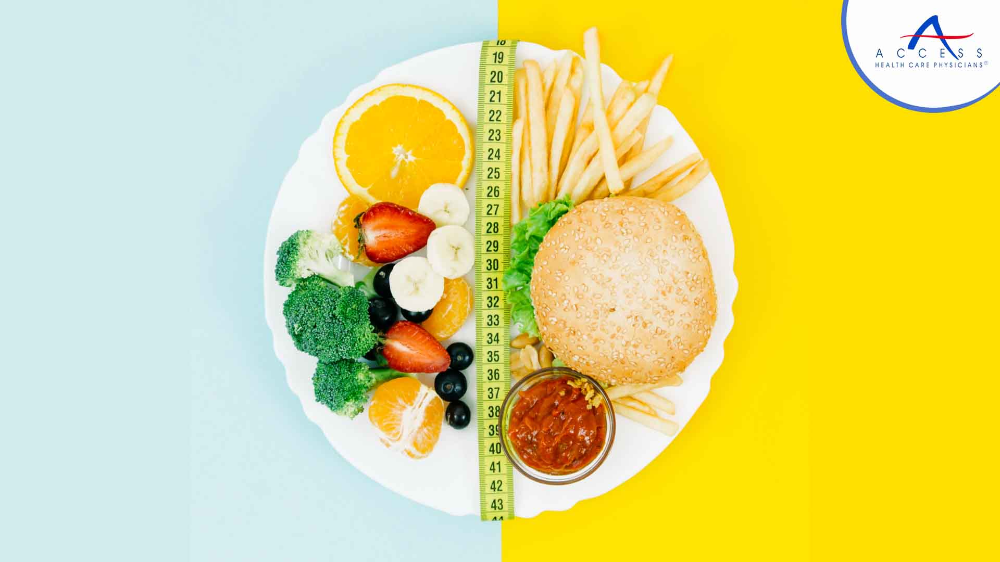

The age-old debate between healthy food and delicious food often pits our taste buds against our nutritional needs. We crave the flavors of indulgent treats, but our bodies yearn for wholesome nourishment. Is it possible to reconcile these two seemingly opposing desires? This article will explore the complex relationship between health and taste, examining how we can make informed choices about our food without sacrificing flavor or satisfaction.
Here some scientific studies-
Nature | National Library of MedicineMany believe that healthy food must sacrifice taste. However, with a focus on fresh ingredients and innovative cooking techniques, it's possible to create delicious and nutritious meals.

The age-old debate between healthy food and delicious food often pits our taste buds against our nutritional needs. We crave the flavors of indulgent treats, but our bodies yearn for wholesome nourishment. Is it possible to reconcile these two seemingly opposing desires? This article will explore the complex relationship between health and taste, examining how we can make informed choices about our food without sacrificing flavor or satisfaction.
| Healthy Food | Deliciuos Food | Calories (approx) |
|---|---|---|
| Fruits and vegetables | Chocolate, ice cream, candy | 40-60 calories per serving |
| Whole grains | Pizza, burgers, fried food | 200-500 calories per serving |
| Lean proteins | Red meat, processed meats, sausages | 150-250 calories per serving |
| Healthy fats (avocado, nuts, olive oil) | Butter, margarine, unhealthy oils | 150-200 calories per serving |
| Healthy fats (avocado, nuts, olive oil) | Butter, margarine, unhealthy oils | 150-200 calories per serving |
| Water, unsweetened beverages | Soda, sugary drinks, alcohol | 0-100 calories per serving |
| Home-cooked meals | Fast food, processed meals | Varies widely, often higher in calories |